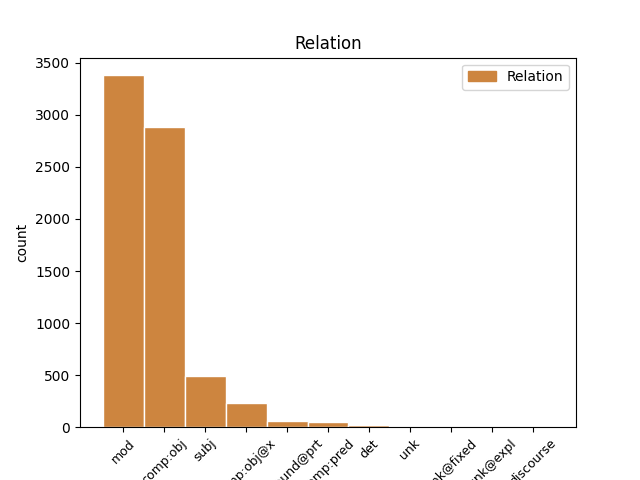
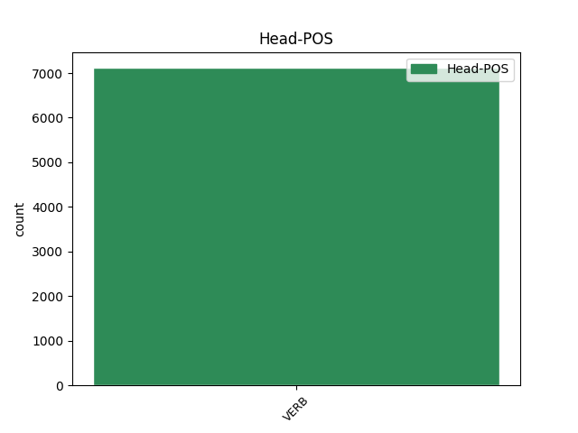
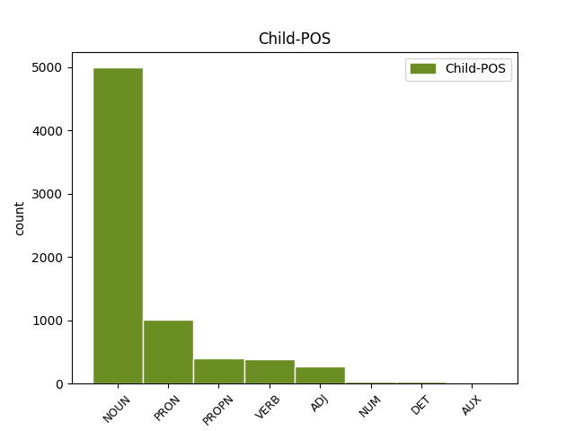

Distribution of features within this leaf



Agreement Rules sorted by frequency.
- When the dependent token is the direct object complements(comp:obj) of the head token, and the head token is VERB and the dependent token is NOUN.
1 Ja _ _ _ _ 0 _ _ _
2 uskottaisiinko _ _ _ _ 0 _ _ _
3 miestä _ _ _ _ 0 _ _ _
4 muutenkaan _ _ _ _ 0 _ _ _
5 , _ _ _ _ 0 _ _ _
6 useita _ _ _ _ 0 _ _ _
7 perättömiä _ _ _ _ 0 _ _ _
8 ilmoituksia ilmoitus NOUN N,Pl,Par Case=Par|Number=Plur 9 comp:obj _ _
9 tehnyttä tehdä VERB V,Act,PcpNut,Sg,Par Case=Par|Number=Sing|PartForm=Past|VerbForm=Part|Voice=Act 0 _ _ _
10 itsensäsilpojaa _ _ _ _ 0 _ _ _
11 ? _ _ _ _ 0 _ _ _
1 Sinne _ _ _ _ 0 _ _ _
2 vain _ _ _ _ 0 _ _ _
3 metsään metsä NOUN N,Sg,Ill Case=Ill|Number=Sing 4 mod _ _
4 tarkkailemaan tarkkailla VERB V,Act,InfMa,Ill Case=Ill|InfForm=3|VerbForm=Inf|Voice=Act 0 _ _ _
5 . _ _ _ _ 0 _ _ _
1 Olen _ _ _ _ 0 _ _ _
2 kuullut _ _ _ _ 0 _ _ _
3 työssä _ _ _ _ 0 _ _ _
4 käyvien _ _ _ _ 0 _ _ _
5 äitien äiti NOUN N,Pl,Gen Case=Gen|Number=Plur 7 subj _ _
6 joskus _ _ _ _ 0 _ _ _
7 lausahtavan lausahtaa VERB V,Act,PcpVa,Sg,Gen Case=Gen|Number=Sing|PartForm=Pres|VerbForm=Part|Voice=Act 0 _ _ _
8 , _ _ _ _ 0 _ _ _
9 että _ _ _ _ 0 _ _ _
10 miksi _ _ _ _ 0 _ _ _
11 pitäisi _ _ _ _ 0 _ _ _
12 jäädä _ _ _ _ 0 _ _ _
13 kotiin _ _ _ _ 0 _ _ _
14 " _ _ _ _ 0 _ _ _
15 makailemaan _ _ _ _ 0 _ _ _
16 " _ _ _ _ 0 _ _ _
17 . _ _ _ _ 0 _ _ _
1 Mitä _ _ _ _ 0 _ _ _
2 sinä _ _ _ _ 0 _ _ _
3 haluaisit _ _ _ _ 0 _ _ _
4 minun minä PRON Pron,Pers,Sg1,Gen Case=Gen|Number=Sing|Person=1|PronType=Prs 5 subj _ _
5 sanovan sanoa VERB V,Act,PcpVa,Sg,Gen Case=Gen|Number=Sing|PartForm=Pres|VerbForm=Part|Voice=Act 0 _ _ _
6 ? _ _ _ _ 0 _ _ _
1 Ja _ _ _ _ 0 _ _ _
2 se se PRON Pron,Dem,Sg,Nom Case=Nom|Number=Sing|PronType=Dem 6 comp:obj _ _
3 on _ _ _ _ 0 _ _ _
4 hiton _ _ _ _ 0 _ _ _
5 reilusti _ _ _ _ 0 _ _ _
6 sanottu sanoa VERB V,Pass,PcpNut,Sg,Nom Case=Nom|Number=Sing|PartForm=Past|VerbForm=Part|Voice=Pass 0 _ _ _
7 , _ _ _ _ 0 _ _ _
8 se _ _ _ _ 0 _ _ _
9 . _ _ _ _ 0 _ _ _
1 Mulla _ _ _ _ 0 _ _ _
2 ei _ _ _ _ 0 _ _ _
3 ole _ _ _ _ 0 _ _ _
4 mitään mikään DET Pron,Qnt,Par Case=Par|PronType=Ind 6 det _ _
5 päälle _ _ _ _ 0 _ _ _
6 pantavaa panna VERB V,Pass,PcpVa,Sg,Par Case=Par|Number=Sing|PartForm=Pres|VerbForm=Part|Voice=Pass 0 _ _ _
7 . _ _ _ _ 0 _ _ _
1 Salaa _ _ _ _ 0 _ _ _
2 olin _ _ _ _ 0 _ _ _
3 toivonut _ _ _ _ 0 _ _ _
4 Janin jani PROPN N,Prop,Sg,Gen Case=Gen|Number=Sing 5 subj _ _
5 ehdottavan ehdottaa VERB V,Act,PcpVa,Sg,Gen Case=Gen|Number=Sing|PartForm=Pres|VerbForm=Part|Voice=Act 0 _ _ _
6 juuri _ _ _ _ 0 _ _ _
7 tätä _ _ _ _ 0 _ _ _
8 , _ _ _ _ 0 _ _ _
9 mutta _ _ _ _ 0 _ _ _
10 sitten _ _ _ _ 0 _ _ _
11 kun _ _ _ _ 0 _ _ _
12 hän _ _ _ _ 0 _ _ _
13 sen _ _ _ _ 0 _ _ _
14 teki _ _ _ _ 0 _ _ _
15 , _ _ _ _ 0 _ _ _
16 häkellyin _ _ _ _ 0 _ _ _
17 . _ _ _ _ 0 _ _ _
1 Kun _ _ _ _ 0 _ _ _
2 kerroin _ _ _ _ 0 _ _ _
3 nepalilaiselle _ _ _ _ 0 _ _ _
4 ystävälleni _ _ _ _ 0 _ _ _
5 Suomessa _ _ _ _ 0 _ _ _
6 olevan _ _ _ _ 0 _ _ _
7 laajoja laaja ADJ A,Pl,Par Case=Par|Number=Plur 10 mod _ _
8 , _ _ _ _ 0 _ _ _
9 tasaisia _ _ _ _ 0 _ _ _
10 asumattomia asua VERB V,PcpNeg,Pl,Par Case=Par|Number=Plur|PartForm=Neg|VerbForm=Part 0 _ _ _
11 alueita _ _ _ _ 0 _ _ _
12 , _ _ _ _ 0 _ _ _
13 hän _ _ _ _ 0 _ _ _
14 kysyi _ _ _ _ 0 _ _ _
15 : _ _ _ _ 0 _ _ _
16 ´ _ _ _ _ 0 _ _ _
17 Miksi _ _ _ _ 0 _ _ _
18 ? _ _ _ _ 0 _ _ _
19 ´ _ _ _ _ 0 _ _ _
1 Uusien _ _ _ _ 0 _ _ _
2 mukaan _ _ _ _ 0 _ _ _
3 on _ _ _ _ 0 _ _ _
4 turha _ _ _ _ 0 _ _ _
5 yrittääkään yrittää VERB V,Act,InfA,Lat,Kaan Case=Lat|Clitic=Kaan|InfForm=1|VerbForm=Inf|Voice=Act 0 _ _ _
6 veisata veisata VERB V,Act,InfA,Lat Case=Lat|InfForm=1|VerbForm=Inf|Voice=Act 5 comp:obj@x _ Alt=5_xcomp
7 . _ _ _ _ 0 _ _ _
1 Näinköhän _ _ _ _ 0 _ _ _
2 Aleksei _ _ _ _ 0 _ _ _
3 Nikolajevitshilla _ _ _ _ 0 _ _ _
4 olisi _ _ _ _ 0 _ _ _
5 aikaa _ _ _ _ 0 _ _ _
6 tulla _ _ _ _ 0 _ _ _
7 tapaamaan tavata VERB V,Act,InfMa,Ill Case=Ill|InfForm=3|VerbForm=Inf|Voice=Act 0 _ _ _
8 minua _ _ _ _ 0 _ _ _
9 lähiaikoina _ _ _ _ 0 _ _ _
10 Leningradiin leningrad PROPN N,Prop,Sg,Ill Case=Ill|Number=Sing 7 mod _ _
11 ? _ _ _ _ 0 _ _ _
1 Alakoski alakoski PROPN N,Prop,Sg,Nom Case=Nom|Number=Sing 4 comp:obj _ _
2 on _ _ _ _ 0 _ _ _
3 eilen _ _ _ _ 0 _ _ _
4 valittu valita VERB V,Pass,PcpNut,Sg,Nom Case=Nom|Number=Sing|PartForm=Past|VerbForm=Part|Voice=Pass 0 _ _ _
5 liiton _ _ _ _ 0 _ _ _
6 aluesihteeriksi _ _ _ _ 0 _ _ _
7 . _ _ _ _ 0 _ _ _
1 Luistelu _ _ _ _ 0 _ _ _
2 oli _ _ _ _ 0 _ _ _
3 Lauran _ _ _ _ 0 _ _ _
4 mielestä _ _ _ _ 0 _ _ _
5 tasan _ _ _ _ 0 _ _ _
6 ainoa _ _ _ _ 0 _ _ _
7 todella _ _ _ _ 0 _ _ _
8 naisellinen _ _ _ _ 0 _ _ _
9 urheilulaji _ _ _ _ 0 _ _ _
10 , _ _ _ _ 0 _ _ _
11 ja _ _ _ _ 0 _ _ _
12 hän _ _ _ _ 0 _ _ _
13 oli _ _ _ _ 0 _ _ _
14 ehdottomasti _ _ _ _ 0 _ _ _
15 sitä _ _ _ _ 0 _ _ _
16 mieltä _ _ _ _ 0 _ _ _
17 , _ _ _ _ 0 _ _ _
18 että _ _ _ _ 0 _ _ _
19 hänen _ _ _ _ 0 _ _ _
20 sisällään _ _ _ _ 0 _ _ _
21 oli _ _ _ _ 0 _ _ _
22 itse itse PRON Pron,Refl,Sg,Nom Case=Nom|Number=Sing|Reflex=Yes 25 mod _ _
23 asiassa _ _ _ _ 0 _ _ _
24 aina _ _ _ _ 0 _ _ _
25 asunut asua VERB V,Act,PcpNut,Sg,Nom Case=Nom|Number=Sing|PartForm=Past|VerbForm=Part|Voice=Act 0 _ _ _
26 henkäyksen _ _ _ _ 0 _ _ _
27 kevyt _ _ _ _ 0 _ _ _
28 jääprinsessa _ _ _ _ 0 _ _ _
29 . _ _ _ _ 0 _ _ _
1 Sen _ _ _ _ 0 _ _ _
2 sijaan _ _ _ _ 0 _ _ _
3 siitä _ _ _ _ 0 _ _ _
4 on _ _ _ _ 0 _ _ _
5 aikaa _ _ _ _ 0 _ _ _
6 kun _ _ _ _ 0 _ _ _
7 kukaan _ _ _ _ 0 _ _ _
8 on _ _ _ _ 0 _ _ _
9 halunnut _ _ _ _ 0 _ _ _
10 tietää tietää VERB V,Act,InfA,Lat Case=Lat|InfForm=1|VerbForm=Inf|Voice=Act 0 _ _ _
11 miten _ _ _ _ 0 _ _ _
12 selvitä selvitä VERB V,Act,InfA,Lat Case=Lat|InfForm=1|VerbForm=Inf|Voice=Act 10 comp:obj _ _
13 jostain _ _ _ _ 0 _ _ _
14 ongelmallisesta _ _ _ _ 0 _ _ _
15 pelaajasta _ _ _ _ 0 _ _ _
16 . _ _ _ _ 0 _ _ _
1 Intiasta _ _ _ _ 0 _ _ _
2 oli _ _ _ _ 0 _ _ _
3 tuleva tulla VERB V,Act,PcpVa,Sg,Nom Case=Nom|Number=Sing|PartForm=Pres|VerbForm=Part|Voice=Act 0 _ _ _
4 entistä _ _ _ _ 0 _ _ _
5 merkittävämpi _ _ _ _ 0 _ _ _
6 voimatekijä voimatekijä NOUN N,Sg,Nom Case=Nom|Number=Sing 3 comp:pred _ _
7 maailman _ _ _ _ 0 _ _ _
8 poliittiselle _ _ _ _ 0 _ _ _
9 näyttämölle _ _ _ _ 0 _ _ _
10 . _ _ _ _ 0 _ _ _
1 Vähän _ _ _ _ 0 _ _ _
2 mun _ _ _ _ 0 _ _ _
3 ois _ _ _ _ 0 _ _ _
4 tehny tehdä VERB V,Act,PcpNut,Sg,Nom Case=Nom|Number=Sing|PartForm=Past|Style=Coll|VerbForm=Part|Voice=Act 0 _ _ _
5 mieli mieli NOUN N,Sg,Nom Case=Nom|Number=Sing 4 compound@prt _ _
6 mennä _ _ _ _ 0 _ _ _
7 sanoo _ _ _ _ 0 _ _ _
8 sil _ _ _ _ 0 _ _ _
9 et _ _ _ _ 0 _ _ _
10 tietsä _ _ _ _ 0 _ _ _
11 mitä _ _ _ _ 0 _ _ _
12 Nadja _ _ _ _ 0 _ _ _
13 ? _ _ _ _ 0 _ _ _
1 Seuratessani seurata VERB V,Act,InfE,Ine,PxSg1 Case=Ine|InfForm=2|Number[psor]=Sing|Person[psor]=1|VerbForm=Inf|Voice=Act 0 _ _ _
2 huligaaneja _ _ _ _ 0 _ _ _
3 heidän _ _ _ _ 0 _ _ _
4 mennessä mennä VERB V,Act,InfE,Ine Case=Ine|InfForm=2|VerbForm=Inf|Voice=Act 1 mod _ _
5 Korson _ _ _ _ 0 _ _ _
6 keskustaan _ _ _ _ 0 _ _ _
7 huomasin _ _ _ _ 0 _ _ _
8 poliisin _ _ _ _ 0 _ _ _
9 " _ _ _ _ 0 _ _ _
10 mustan _ _ _ _ 0 _ _ _
11 maijan _ _ _ _ 0 _ _ _
12 " _ _ _ _ 0 _ _ _
13 . _ _ _ _ 0 _ _ _
1 olet _ _ _ _ 0 _ _ _
2 mukanamme _ _ _ _ 0 _ _ _
3 rakentamassa rakentaa VERB V,Act,InfMa,Ine Case=Ine|InfForm=3|VerbForm=Inf|Voice=Act 0 _ _ _
4 yhdessä yksi NUM Num,Card,Sg,Ine Case=Ine|Number=Sing|NumType=Card 3 mod _ _
5 pala _ _ _ _ 0 _ _ _
6 palalta _ _ _ _ 0 _ _ _
7 parempaa _ _ _ _ 0 _ _ _
8 maailmaa _ _ _ _ 0 _ _ _
1 Cola _ _ _ _ 0 _ _ _
2 myös _ _ _ _ 0 _ _ _
3 voittaa _ _ _ _ 0 _ _ _
4 edelleen _ _ _ _ 0 _ _ _
5 nuoremmat _ _ _ _ 0 _ _ _
6 mennen mennä VERB V,Act,InfE,Ins Case=Ins|InfForm=2|VerbForm=Inf|Voice=Act 0 _ _ _
7 tullen tulla VERB V,Act,InfE,Ins Case=Ins|InfForm=2|VerbForm=Inf|Voice=Act 6 unk@fixed _ _
8 näyttelykehässä _ _ _ _ 0 _ _ _
9 . _ _ _ _ 0 _ _ _
1 Paha paha ADJ A,Sg,Nom Case=Nom|Number=Sing 3 comp:obj _ _
2 on _ _ _ _ 0 _ _ _
3 tuhottava tuhota VERB V,Pass,PcpVa,Sg,Nom Case=Nom|Number=Sing|PartForm=Pres|VerbForm=Part|Voice=Pass 0 _ _ _
4 . _ _ _ _ 0 _ _ _
1 s´ se PRON Pron,Dem,Sg,Nom Case=Nom|Number=Sing|PronType=Dem|Style=Coll 6 unk _ Missed-Rel=phrm
2 o _ _ _ _ 0 _ _ _
3 harvon _ _ _ _ 0 _ _ _
4 ko _ _ _ _ 0 _ _ _
5 on _ _ _ _ 0 _ _ _
6 ollut olla VERB V,Act,PcpNut,Sg,Nom Case=Nom|Number=Sing|PartForm=Past|VerbForm=Part|Voice=Act 0 _ _ _
7 toukokuusa _ _ _ _ 0 _ _ _
8 jäät _ _ _ _ 0 _ _ _
9 täsä _ _ _ _ 0 _ _ _
10 joesa _ _ _ _ 0 _ _ _
1 Minä _ _ _ _ 0 _ _ _
2 olen _ _ _ _ 0 _ _ _
3 ollut _ _ _ _ 0 _ _ _
4 yhteydessä _ _ _ _ 0 _ _ _
5 semmoiseen semmoinen DET A,Dem,Sg,Ill Case=Ill|Number=Sing|PronType=Dem 8 mod _ Alt=DET
6 pankin _ _ _ _ 0 _ _ _
7 henkilökuntaan _ _ _ _ 0 _ _ _
8 kuuluvaan kuulua VERB V,Act,PcpVa,Sg,Ill Case=Ill|Number=Sing|PartForm=Pres|VerbForm=Part|Voice=Act 0 _ _ _
9 kuin _ _ _ _ 0 _ _ _
10 ekonomi _ _ _ _ 0 _ _ _
11 Kauppilaan _ _ _ _ 0 _ _ _
12 . _ _ _ _ 0 _ _ _
1 Koirannäköinen _ _ _ _ 0 _ _ _
2 tai _ _ _ _ 0 _ _ _
3 ei _ _ _ _ 0 _ _ _
4 , _ _ _ _ 0 _ _ _
5 kuusikymmentä kuusikymmentä NUM Num,Card,Sg,Nom Case=Nom|Number=Sing|NumType=Card 6 comp:obj _ _
6 täyttänyt täyttää VERB V,Act,PcpNut,Sg,Nom Case=Nom|Number=Sing|PartForm=Past|VerbForm=Part|Voice=Act 0 _ _ _
7 mies _ _ _ _ 0 _ _ _
8 joutuu _ _ _ _ 0 _ _ _
9 myöntämään _ _ _ _ 0 _ _ _
10 , _ _ _ _ 0 _ _ _
11 että _ _ _ _ 0 _ _ _
12 elämä _ _ _ _ 0 _ _ _
13 ei _ _ _ _ 0 _ _ _
14 enää _ _ _ _ 0 _ _ _
15 muuksi _ _ _ _ 0 _ _ _
16 muutu _ _ _ _ 0 _ _ _
17 ell _ _ _ _ 0 _ _ _
18 ei _ _ _ _ 0 _ _ _
19 hän _ _ _ _ 0 _ _ _
20 itse _ _ _ _ 0 _ _ _
21 tee _ _ _ _ 0 _ _ _
22 jotakin _ _ _ _ 0 _ _ _
23 . _ _ _ _ 0 _ _ _
1 Joka _ _ _ _ 0 _ _ _
2 kymmenes kymmenes ADJ A,Ord,Sg,Nom Case=Nom|Number=Sing|NumType=Ord 3 subj _ _
3 joutunut joutua VERB V,Act,PcpNut,Sg,Nom Case=Nom|Number=Sing|PartForm=Past|VerbForm=Part|Voice=Act 0 _ _ _
4 ahdistelluksi _ _ _ _ 0 _ _ _
5 yliopistolla _ _ _ _ 0 _ _ _
1 " _ _ _ _ 0 _ _ _
2 Välillä _ _ _ _ 0 _ _ _
3 pitää _ _ _ _ 0 _ _ _
4 erikseen _ _ _ _ 0 _ _ _
5 päättää päättää VERB V,Act,InfA,Lat Case=Lat|InfForm=1|VerbForm=Inf|Voice=Act 0 _ _ _
6 olla olla AUX V,Act,InfA,Lat Case=Lat|InfForm=1|VerbForm=Inf|Voice=Act 5 comp:obj@x _ _
7 tekemättä _ _ _ _ 0 _ _ _
8 työtä _ _ _ _ 0 _ _ _
9 , _ _ _ _ 0 _ _ _
10 jotta _ _ _ _ 0 _ _ _
11 osaisi _ _ _ _ 0 _ _ _
12 rentoutua _ _ _ _ 0 _ _ _
13 " _ _ _ _ 0 _ _ _
14 , _ _ _ _ 0 _ _ _
15 Juhani _ _ _ _ 0 _ _ _
16 Artto _ _ _ _ 0 _ _ _
17 sanoo _ _ _ _ 0 _ _ _
18 . _ _ _ _ 0 _ _ _
Disagree Examples:
1 ei _ _ _ _ 0 _ _ _
2 net _ _ _ _ 0 _ _ _
3 tykähne tykätä VERB V,Act,PcpNut,Pl,Nom Case=Nom|Number=Plur|PartForm=Past|Style=Coll|VerbForm=Part|Voice=Act 0 _ _ _
4 olla olla VERB V,Act,InfA,Lat Case=Lat|InfForm=1|VerbForm=Inf|Voice=Act 3 comp:obj@x _ Alt=3_xcomp
5 näim _ _ _ _ 0 _ _ _
6 pohjosessa _ _ _ _ 0 _ _ _
1 ei _ _ _ _ 0 _ _ _
2 net _ _ _ _ 0 _ _ _
3 tykähne _ _ _ _ 0 _ _ _
4 olla olla VERB V,Act,InfA,Lat Case=Lat|InfForm=1|VerbForm=Inf|Voice=Act 0 _ _ _
5 näim _ _ _ _ 0 _ _ _
6 pohjosessa pohjoinen ADJ A,Sg,Ine Case=Ine|Number=Sing|Style=Coll 4 mod _ _
1 Pekka _ _ _ _ 0 _ _ _
2 voi _ _ _ _ 0 _ _ _
3 antaa antaa VERB V,Act,InfA,Lat Case=Lat|InfForm=1|VerbForm=Inf|Voice=Act 0 _ _ _
4 lisää _ _ _ _ 0 _ _ _
5 ruokaa ruoka NOUN N,Sg,Par Case=Par|Number=Sing 3 comp:obj _ _
6 . _ _ _ _ 0 _ _ _
1 saat _ _ _ _ 0 _ _ _
2 siinä _ _ _ _ 0 _ _ _
3 koko _ _ _ _ 0 _ _ _
4 ikäs ikä NOUN N,Sg,Gen,PxSg2 Case=Gen|Number=Sing|Number[psor]=Sing|Person[psor]=2|Style=Coll 5 mod _ _
5 olla olla VERB V,Act,InfA,Lat Case=Lat|InfForm=1|VerbForm=Inf|Voice=Act 0 _ _ _
1 mi _ _ _ _ 0 _ _ _
2 olen _ _ _ _ 0 _ _ _
3 ollu _ _ _ _ 0 _ _ _
4 noip _ _ _ _ 0 _ _ _
5 puita puu NOUN N,Pl,Par Case=Par|Number=Plur 6 comp:obj _ _
6 kaatamas kaataa VERB V,Act,InfMa,Ine Case=Ine|InfForm=3|Style=Coll|VerbForm=Inf|Voice=Act 0 _ _ _
7 mettäs _ _ _ _ 0 _ _ _
8 . _ _ _ _ 0 _ _ _